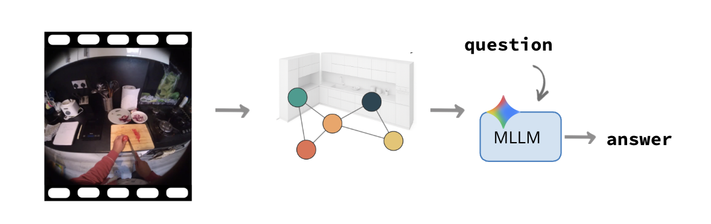

Computer Vision Thesis
The topics here outlined reflect areas I’m curious about and motivated to explore. Each contributes to a different piece of a bigger challenge, building AI systems that can perceive, model, and reason about the world through vision in a human-like way. At the same time, I’m very open to fresh perspectives. You may have better or more novel directions in mind, and I’d be excited to follow those paths if they open up fun projects! 😄
Ps. This document is evolving, new ideas for research projects might come up! Stay tuned! 🔥
To express your interest, fill this form: Form
For any question, contact me at: chiara.plizzari@unibocconi.it
Old Proposals
The following thesis directions are previous proposals. They may still be available, but are grouped separately from newer ideas.
1. Towards Robust Video-Question Answering
Requirements: Python, PyTorch
The task of Video Question Answering (Video QA) involves analyzing a video in order to correctly answer a given natural-language question. Recent approaches primarily leverage large vision-language models (VLMs), which have shown strong capabilities in multimodal understanding [5].
However, these models face notable limitations. A primary challenge lies in their difficulty in processing long videos due to input token constraints, which restrict the number of frames or segments that can be effectively analyzed [3]. As a result, important portions of the video may be omitted or compressed, leading to incomplete understanding. Beyond this, many models struggle to capture fine-grained temporal dynamics and subtle causal relationships between events, both of which are critical for tasks that require reasoning over sequences rather than isolated frames [2]. Their capacity for long-range reasoning is also limited, making it difficult to integrate information spread across distant segments of a video [3,5].
The goal of this thesis is to address one of these limitations by developing methods that enhance the reasoning capabilities of Video QA systems, with the broader goal of building more robust models for real-world video understanding [1,4].
References:
- [1] Taluzzi, Agnese, et al. "From Pixels to Graphs: using Scene and Knowledge Graphs for HD-EPIC VQA Challenge." arXiv preprint arXiv:2506.08553 (2025).
- [2] Plizzari, Chiara, et al. "Omnia de egotempo: Benchmarking temporal understanding of multi-modal llms in egocentric videos." Proceedings of the Computer Vision and Pattern Recognition Conference. 2025.
- [3] Liu, Shuming, et al. "BOLT: Boost Large Vision-Language Model Without Training for Long-form Video Understanding." Proceedings of the Computer Vision and Pattern Recognition Conference. 2025.
- [4] Perrett, Toby, et al. "Hd-epic: A highly-detailed egocentric video dataset." Proceedings of the Computer Vision and Pattern Recognition Conference. 2025.
- [5] Zhang, Boqiang, et al. "Videollama 3: Frontier multimodal foundation models for image and video understanding." arXiv preprint arXiv:2501.13106 (2025).
2. Neurosymbolic Approaches for Video Understanding
Requirements: Python, PyTorch
An area of particular interest is the use of neuro-symbolic approaches for video understanding. Instead of reasoning directly over raw pixel data, the question is whether computer vision models, such as large vision-language models (VLMs), can operate effectively on higher-level, structured representations of videos. These representations might include scene graphs, captions, or other symbolic abstractions that capture semantic information from the video. For example, scene graphs are commonly used to model the relationships between entities and actions within a scene [2].
By shifting the reasoning process from the video to these structured representations, models may achieve deeper temporal and causal understanding, greater interpretability, and improved scalability for long and complex videos [2].
Building on prior research experience, where a previous M.Sc. thesis led to securing first place in the HD-EPIC challenge [1], this thesis investigates how neuro-symbolic approaches can be leveraged for more robust video understanding.
References:
- [1] Taluzzi, Agnese, et al. "From Pixels to Graphs: using Scene and Knowledge Graphs for HD-EPIC VQA Challenge." arXiv preprint arXiv:2506.08553 (2025).
- [2] Rodin, I., Furnari, A., Min, K., Tripathi, S., & Farinella, G. M. (2024). "Action scene graphs for long-form understanding of egocentric videos." In Proceedings of the IEEE/CVF Conference on Computer Vision and Pattern Recognition (pp. 18622-18632).
3. World Models for Video Understanding

Requirements: Python, PyTorch
Collaborators: Gabriele Goletto from Microsoft Research
...
4. 4D Scene Understanding for Egocentric Vision
...
5. Using Computer Vision to Understand Biological Brain Functioning
...
6. Ego-4D / Ego-Exo-4D Challenges
...
New Proposals
This section is reserved for new research directions and thesis ideas. Two placeholders are provided below.
Proposal 1.
Requirements:
Collaborators:
Proposal 2.
Requirements:
Collaborators: